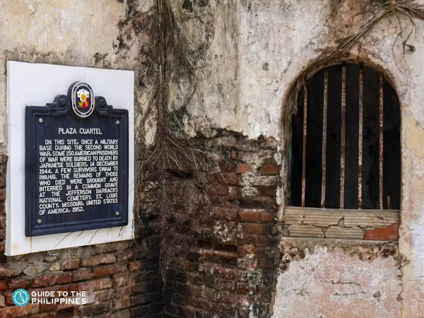
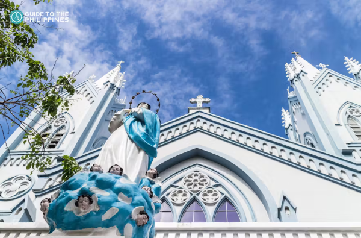
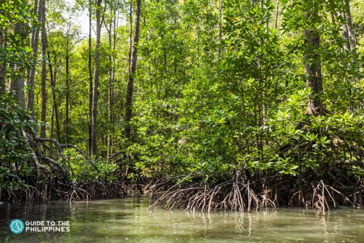

Explore
Places to visit in Puerto Princesa
Underground River of Palawan

A trip to Puerto Princesa isn't complete without visiting the UNESCO World Heritage Site and New7Wonders of Nature, Puerto Princesa Subterranean River National Park in Sabang. This sprawling cave system, also known as the Puerto Princesa Underground River, is the province's main tourist attraction and one of the best places to visit in Puerto Princesa. It features limestone karst formations, pristine forests, large stalactites and stalagmites ,and an 8.2-kilometer-long underground river.Apart from the underground river that stretches up to 8.2km, you can also hike up the park's forests to spot wildlife. Its forests host a wide variety of birds, mammals, and reptiles, all peacefully thriving within the park grounds. The best way to explore this natural wonder is by joining Puerto Princesa underground river tours where you will board motorized paddle boats. You will be provided with a lifejacket, headgear, and an audio device where you can listen to a recorded instructional guide on the underground river. While cruising inside the underground river, you might also spot different species of bats, birds, and reptiles.
Go Island-Hopping in Honda Bay

The Palawan Rescue and Wildlife Conservation Centre, also known as the Crocodile Farm, is a research center for crocodiles and other endangered species in Palawan. The eight-acre wildlife center houses hundreds of crocodiles and can accommodate up to 4000. Here you can learn more about the endangered creatures and get an up-close look at them. A tour of the crocodile farm will let you see two endangered types of this creature which the center also aims to conserve: saltwater crocodiles and freshwater crocodiles. You will also pay a visit to the crocodile skeleton exhibit, the hatchling house to see baby crocodiles that you can pet with supervision, and the swamp enclosure for adult crocodiles that you can also feed on a bridge. Apart from the crocodiles, there is also a mini zoo and wildlife park that houses different species of birds, mammals, reptiles, and other animals found in Palawan and are allowed to roam freely. You can visit the crocodile farm by booking a Puerto Princesa city tour.
Visit the Crocodile Farm

Beach lovers often skip Puerto Princesa in favor of El Nido and Coron, its more famous island destination neighbors, but the city is also one of the top tourist destinations in the Philippines. Apart from the underground river experience, Puerto Princesa's Honda Bay is blessed with white sand beaches in the Philippines and small islands rich in marine life, and you can visit the top Puerto Princesa tourist attractions all in just one day with Honda Bay island-hopping adventures. It is one of the must-visit places in Puerto Princesa, Palawan, and exploring it is a great way to experience island-hopping in the Philippines.
Buy Treats at Baker's Hill

This Puerto Princesa city tour stop is a great foodie destination. As the name suggests, it sits on top of a hill and offers various baked goods. They are most known for their hopia (bean-filled, moon cake-like pastry) that comes in a variety of flavors, with ube (purple yam) as the bestseller. You can munch on freshly baked hopia during the activity or buy boxes of them for pasalubong (food souvenirs). Aside from hopia, other must-try treats include their crinkles and cookies. Baker's Hill also has a pizza kitchen and restaurant if you want a more filling meal aside from the hopia snacks. You can choose from pizza, pasta, dishes, sandwiches, and shakes. Palawan's exotic delicacy tamilok (woodworm) is also served in their restaurant if you're up for it! Aside from the tasty baked goods, Baker's Hill also has a garden with fun statues, perfect for photos with kids and families. You might even spot peacocks here! At night, it's ideal for romantic strolls. Thanks to its location, Baker's Hill also has a view deck where you are treated to a panoramic view of Puerto Princesa.
Lounge in Puerto Princesa Beaches

This Puerto Princesa city tour stop is a great foodie destination. As the name suggests, it sits on top of a hill and offers various baked goods. They are most known for their hopia (bean-filled, moon cake-like pastry) that comes in a variety of flavors, with ube (purple yam) as the bestseller. You can munch on freshly baked hopia during the activity or buy boxes of them for pasalubong (food souvenirs). Aside from hopia, other must-try treats include their crinkles and cookies. Baker's Hill also has a pizza kitchen and restaurant if you want a more filling meal aside from the hopia snacks. You can choose from pizza, pasta, dishes, sandwiches, and shakes. Palawan's exotic delicacy tamilok (woodworm) is also served in their restaurant if you're up for it! Aside from the tasty baked goods, Baker's Hill also has a garden with fun statues, perfect for photos with kids and families. You might even spot peacocks here! At night, it's ideal for romantic strolls. Thanks to its location, Baker's Hill also has a view deck where you are treated to a panoramic view of Puerto Princesa.
Take a Moment of Silence at Plaza Cuartel
Plaza Cuartel is a famous historical tourist attraction often included in a Puerto Princesa sightseeing experience. It's a grim reminder of the Palawan Massacre which happened during World War II. On December 14, 1944, Japanese soldiers brought 150 American prisoners-of-war to the shelter trenches (that the prisoners themselves dugout), doused them with gasoline, and burned them alive. The Palawan Massacre killed 139 prisoners-of-war. Only 11 prisoners were able to escape death and were the ones who told the horrifying story. Today, Plaza Cuartel is an open-air war museum and shrine to the American prisoners-of-war who perished in this mass execution. In the middle of Plaza Cuartel is a marker with a list of the names of the casualties of the Palawan Massacre. Plaza Cuartel is located near the wharf of Puerto Princesa and offers a good view of the ocean. It also has a garden that you can stroll and learn more about its history with the posters installed.
Stroll at Puerto Princesa City Baywalk Park

Unwind and explore the Puerto Princesa City Baywalk Park (or Baywalk), an open seaside community park where you can stroll, ride bikes, or watch the sunset view. The Baywalk is a famous spot not just for travelers but with locals as well. It's usually included in a Puerto Princesa sightseeing escapade. The seaside promenade attracts joggers and cyclists in the early morning, and a group of friends by late afternoon to nighttime to watch the sunset or try out the local snacks and drinks in the food stalls. There are also restaurants where you can feast on fresh seafood for dinner. If lounging by the benches or strolling isn’t enough for you, you can rent bicycles at the far end of the park for kids and adults that you can use within the park's vicinity. Don't miss taking a photo at the Puerto Princesa signage while in the park!
Drink at Palaweño Brewery

When it comes to Puerto Princesa nightlife, the ultimate destination in your list should be Palaweño Brewery. This first female-owned and operated craft brewery in the Philippines has been making waves in the global media because of their unique line of craft beers made with fresh local ingredients like coconuts, mangoes, honey, and spices. Their signature year-round available craft beers include Ambog Ale (American Amber Ale), Palawan Wit (Belgian Wheat Beer), Palaw’An (Honey Kolsch), Ayahay IPA, and Hunter (Honey Nut Brown Ale). They also offer seasonal beers like Buko Loco Coconut Cream Ale and Mango de Palawan. Aside from serving their brews in Palaweño Brewery's taproom, they brew and hand-label about 1200 cases monthly and are sold in local bars, restaurants, and hotels in Puerto Princesa and the rest of the province. They also offer microbrewery experiences perfect for craft beer enthusiasts.
Appreciate the Architecture of the Immaculate Conception Cathedral
The blue and white-colored Immaculate Conception Cathedral often included in a Puerto Princesa package is a century-old historic landmark and a famous tourist destination for Puerto Princesa city tours. You can check out the cathedral right after visiting the Plaza Cuartel which is just right across it. It was first built during the Spanish-era in the Philippines as a small church but was developed into a cathedral in 1961. The majestic Immaculate Conception Cathedral is known for its unique Gothic architectural design that features pointed symmetrical arches that are reminiscent of Medieval European structures. Aside from its architecture, the Immaculate Conception Cathedral's historical significance dates back to 1872 when the first mass in Puerto Princesa was held here. It was also during that time when the Immaculate Conception of Mary was proclaimed as the Patroness of Puerto Princesa. You can also find some wood carvings from the Iwahig Prison and Penal Colony displayed in the cathedral.
Go on a Mangrove Paddle Boat Tour
There's more to Puerto Princesa's river attractions aside from the famous underground river trip. It is also blessed with lush mangrove forests that you can explore on a serene paddleboat tour. Mangrove forests are essential productive ecosystems. They provide protection for shorelines, prevent erosion, and filter pollutants to maintain water quality and clarity. It is why Puerto Princesa is active in not just protecting these areas but also in spreading awareness about their conservation.